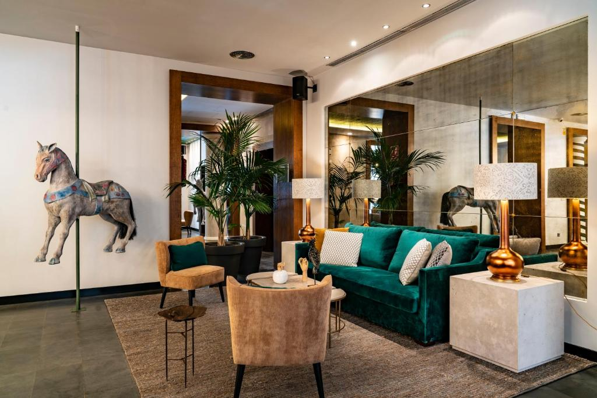
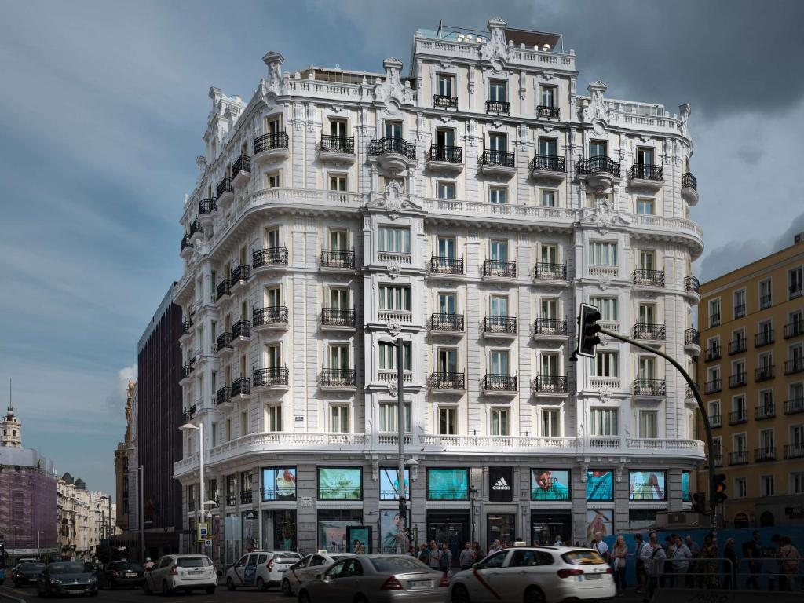

西班牙廣場RIU酒店
RIU Hotels & Resorts是西班牙著名的國際酒店連鎖集團。這間在西班牙廣場旁的RIU飯店不僅是該集團的招牌，也是馬德里的著名地標之一 飯店內設有360度觀景台，是著名的打卡拍照景點，同時也設有健身房、游泳池及空中酒吧等設施，離捷運站僅需步行1分鐘


維基蘇豪酒店
這間位於馬德里市中心的四星級旅館具有獨特裝潢及超大客房，距離太陽門廣場僅400公尺，整個街區具有濃厚的文藝氣息。
阿托查睡眠旅館
鄰近普拉多美術館、索菲亞王后藝術中心及麗池公園，位居交通樞紐。除了提供24小時櫃台及行李寄存服務之外，飯店也提供單人間給獨自旅行的旅客。 附近就是阿托查車站，可乘車前往鄰近的城市旅遊。


格蘭大道NH典藏飯店
這間飯店位於西班牙最大的商店街格蘭大道上，距離地鐵站步行僅需1分鐘，旅客可以在屋頂的餐廳享受精緻的餐點並眺望整個城市的景色。